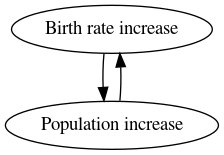
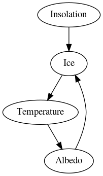
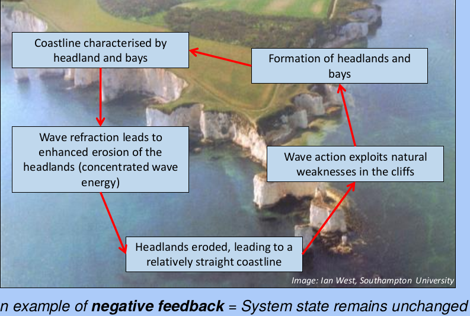
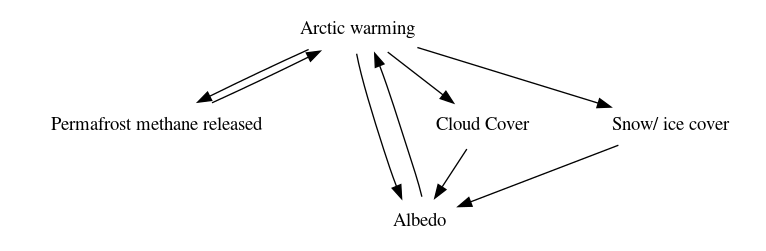
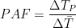
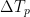
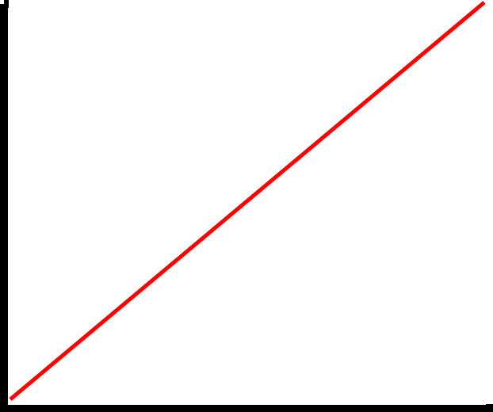
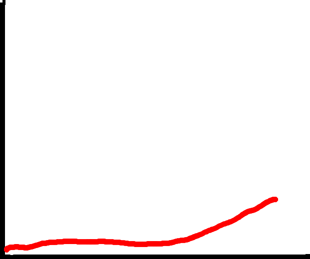
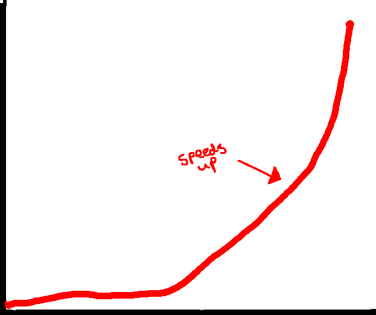
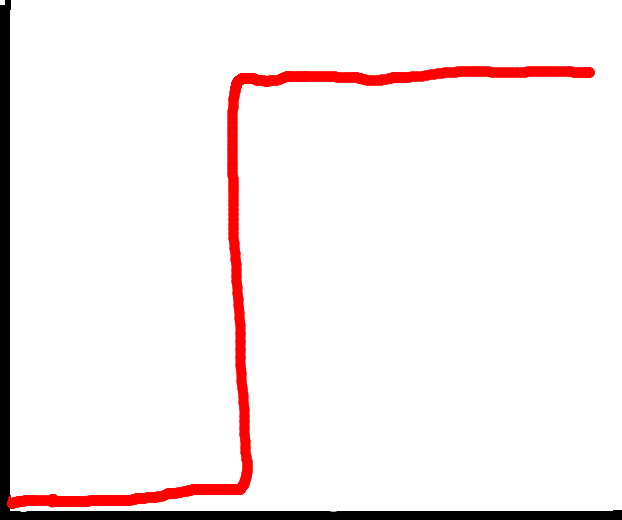

System complexity and Chaos
Created Tuesday 25 February 2020
@POPG @GEOGRAPHY @YEAR1
- The earth @systems are a series of spheres and the interactions between then: material and energy fluxes, though this is a heavily simplified model.
- Interactions are complex and act on different @time scales
- The Earth itself is a closed system, but its subsystems are open, except that energy moves in and out of the Earth all the time, hence @equilibrium doesn't exist (but of course it depends on the timescale you look at)
Complexities
Complexities include:
@feedback
@Threshold
@non_linearity
@Chaos
@Amplification
Feedback
Positive: Negative:
 
Amplification
@Amplification
Changes in @insolation have a greater effect on the poles than the rest of the world → @Arctic is warming 2x as fast
@Venus is so hot that it's poles are the same temperature; it is @isothermal
Major mechanisms:
- Feedback
- Reduction in snow/ ice cover/ sea ice
- Poleward heat movement
- Soot in the arctic → more clouds and water vapour → warmer @climate
This amplification also has other impacts:

Amplification factor:

= polar temperature change
Responses
Linear

Limited/ muted

Non linear/ exponential: populations

Threshold: @eutrophication

Chaos
@chaos → difficult to predict the future
Causes @uncertainty in modeling
Tiny changes can cause expected results
Examples of chaos in Geography:
- Weather: we can't predict the weather more than 3 days in advance because the systems are so complex
- @hazards: can't say exactly when a volcano will errupt
- Poulation changes
- Stocks and shares
- @Lorenzian_Waterwheel
- Development of the solar system
The great storm of 1987: Michael Fish told viewers that there wouldn't be a hurricane, but the storm caused £2bn worth of damage and caused fatalities when it unepectedly changed course.
But the @Burns_Day_Storm of 1990 was predicted by the met office, yet it still caused 97 deaths.
Small differences in measurements could have completely changed the course of these events.
üìñÔ∏èChaos: A very short introduction
- The @Butterfly_effect is known mathematicly as @sentive_dependence
- Doesn't make forecasting useless
- Ampliies @uncertainty and allows its rapid growth
- All measurements have @noise to some extent (something that gets in the way of what you're trying to measure) → a "true" value is never reached
- Major source of chaos is free will: I can move my hands whenever I want, causing pertubations in the atmosphere
- Impacts @evolution; small differences at the beginning cause large changes later on.
@non_linearity means that a small change causes a disproportionate response: adding a second straw to the camel has a much bigger effect than the first
Gravel Barriers
All the gravel barriers here are a different shape. Do they organise themselves chaoticly?
The paper (attached) says they do.
There is absolutely no consitency → must be chaotic?